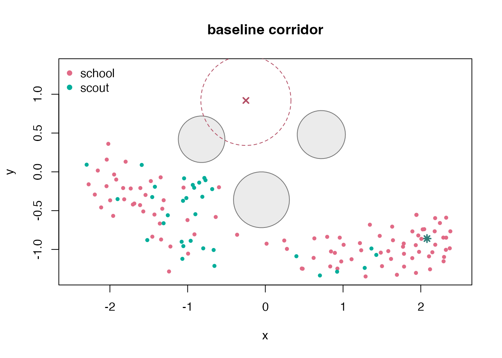
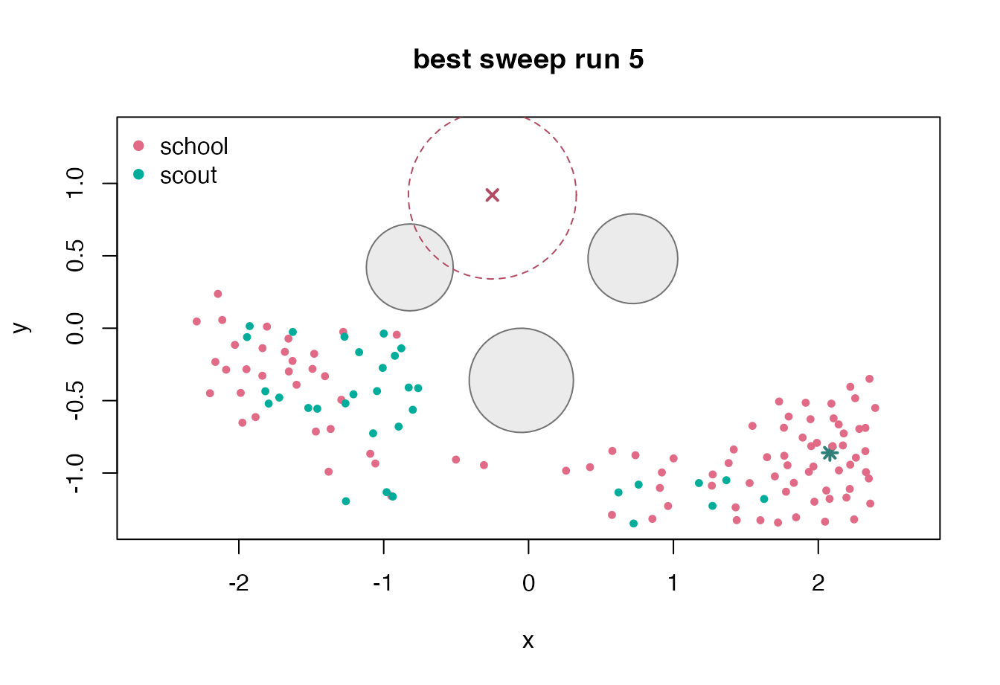
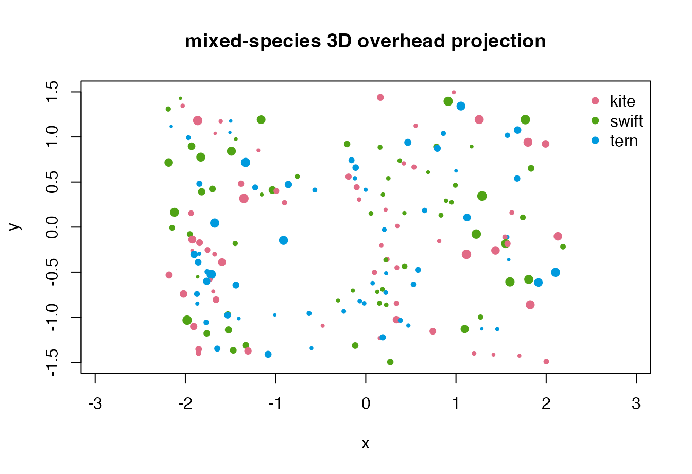

Custom Simulation Workflows
Source:vignettes/custom-simulation-workflows.Rmd
custom-simulation-workflows.RmdThe named scenarios are convenient starting points, but the lower-level constructors are intended for custom experiments. This vignette builds a 2D corridor with a goal, obstacles, and a predator zone, then runs a small parameter sweep. It finishes with a 3D mixed-species example.
Build a corridor experiment
The initial state places two species near the left side of the world. Obstacles create a staggered corridor, an attractor pulls the swarm toward the lower-right exit, and a predator zone discourages a direct high route.
bounds <- matrix(
c(-2.4, -1.35, 2.4, 1.35),
ncol = 2,
dimnames = list(c("x", "y"), c("min", "max"))
)
n_school <- 96L
n_scout <- 32L
n_boids <- n_school + n_scout
school_i <- seq_len(n_school)
scout_i <- seq_len(n_scout)
boid_i <- seq_len(n_boids)
positions <- rbind(
cbind(seq(-2.18, -1.35, length.out = n_school),
-0.25 + 0.42 * sin(0.19 * school_i)),
cbind(seq(-2.22, -1.45, length.out = n_scout),
0.60 + 0.28 * sin(0.31 * scout_i))
)
velocities <- cbind(
0.35 + 0.20 * sin(0.13 * boid_i),
0.08 * cos(0.17 * boid_i)
)
state <- boids_state(
n_boids,
"2d",
bounds = bounds,
positions = positions,
velocities = velocities,
species = c(rep("school", n_school), rep("scout", n_scout))
)
world <- boids_world(
"2d",
bounds = bounds,
boundary = "reflect",
obstacles = data.frame(
x = c(-0.82, -0.05, 0.72),
y = c(0.42, -0.36, 0.48),
radius = c(0.30, 0.36, 0.31)
),
predators = data.frame(
x = -0.25,
y = 0.92,
radius = 0.58,
strength = 1.2
),
attractors = data.frame(
x = 2.08,
y = -0.86,
strength = 0.95
)
)
params <- boids_params(
"2d",
separation_weight = 1.35,
alignment_weight = 0.94,
cohesion_weight = 0.62,
obstacle_weight = 2.5,
predator_weight = 2.3,
goal_weight = 0.16,
max_speed = 1.18,
max_force = 0.12,
noise = 0.001
)
corridor <- simulate_boids(
state,
world,
params,
steps = 85,
record_every = 5,
seed = 221
)Measure progress and clearance
Because output frames are ordinary data frames, experiment-specific metrics can be written directly. Here we measure final progress toward the exit, distance from obstacles, and species-level speed.
final_frame <- function(sim) {
frames <- as.data.frame(sim)
frames[frames$frame == max(frames$frame), , drop = FALSE]
}
clearance_to_obstacles <- function(frame, obstacles) {
if (!nrow(obstacles)) return(rep(Inf, nrow(frame)))
distances <- vapply(seq_len(nrow(obstacles)), function(i) {
sqrt(
(frame$x - obstacles$x[i])^2 +
(frame$y - obstacles$y[i])^2 +
(frame$z - obstacles$z[i])^2
) - obstacles$radius[i]
}, numeric(nrow(frame)))
apply(distances, 1L, min)
}
corridor_metrics <- function(sim, label = NULL) {
if (is.null(label)) {
label <- if (is.na(sim$scenario)) "custom" else sim$scenario
}
final <- final_frame(sim)
clearance <- clearance_to_obstacles(final, sim$world$obstacles)
data.frame(
run = label,
exit_fraction = round(mean(final$x > 1.25), 3),
centroid_x = round(mean(final$x), 3),
mean_speed = round(mean(final$speed), 3),
mean_clearance = round(mean(clearance), 3),
minimum_clearance = round(min(clearance), 3),
stringsAsFactors = FALSE
)
}
corridor_metrics(corridor, "baseline")
#> run exit_fraction centroid_x mean_speed mean_clearance minimum_clearance
#> 1 baseline 0.273 -0.356 1.053 0.991 0.152
species_progress <- stats::aggregate(
cbind(x, speed) ~ species,
final_frame(corridor),
mean
)
species_progress$x <- round(species_progress$x, 3)
species_progress$speed <- round(species_progress$speed, 3)
species_progress
#> species x speed
#> 1 school -0.064 1.084
#> 2 scout -1.229 0.959Plot the world and final state
This diagnostic uses only base graphics. Solid circles show obstacles, the dashed circle shows the predator influence zone, and the star marks the attractor.
draw_corridor <- function(sim, title = "corridor final state") {
final <- final_frame(sim)
world <- sim$world
palette <- stats::setNames(
grDevices::hcl.colors(length(unique(final$species)), "Dark 3"),
sort(unique(final$species))
)
graphics::plot(
final$x, final$y,
xlim = world$bounds["x", ],
ylim = world$bounds["y", ],
asp = 1,
xlab = "x",
ylab = "y",
main = title,
type = "n"
)
graphics::symbols(
world$obstacles$x, world$obstacles$y,
circles = world$obstacles$radius,
inches = FALSE,
add = TRUE,
fg = "gray45",
bg = grDevices::adjustcolor("gray75", alpha.f = 0.3)
)
graphics::symbols(
world$predators$x, world$predators$y,
circles = world$predators$radius,
inches = FALSE,
add = TRUE,
fg = "#B24C63",
lty = 2
)
graphics::points(world$predators$x, world$predators$y, pch = 4, col = "#B24C63", lwd = 2)
graphics::points(world$attractors$x, world$attractors$y, pch = 8, col = "#2F7E79", lwd = 2)
graphics::points(final$x, final$y, col = palette[final$species], pch = 16, cex = 0.75)
graphics::legend("topleft", legend = names(palette), col = palette, pch = 16, bty = "n")
}
draw_corridor(corridor, "baseline corridor")
Sweep steering weights
The next block compares eight rule-weight combinations. All runs reuse the same initial state and world, so differences come from steering parameters and simulation noise only.
sweep <- expand.grid(
obstacle_weight = c(1.8, 2.5),
predator_weight = c(2.2, 3.0),
goal_weight = c(0.08, 0.20)
)
sweep_runs <- lapply(seq_len(nrow(sweep)), function(i) {
run_params <- do.call(
boids_params,
c(
list(
dimension = "2d",
separation_weight = 1.35,
alignment_weight = 0.94,
cohesion_weight = 0.62,
max_speed = 1.18,
max_force = 0.12,
noise = 0.001
),
as.list(sweep[i, ])
)
)
simulate_boids(
state,
world,
run_params,
steps = 85,
record_every = 5,
seed = 300 + i
)
})
sweep_metrics <- do.call(rbind, lapply(seq_along(sweep_runs), function(i) {
cbind(
sweep[i, ],
corridor_metrics(sweep_runs[[i]], paste0("run-", i))
)
}))
sweep_metrics[order(-sweep_metrics$exit_fraction, -sweep_metrics$mean_clearance), ]
#> obstacle_weight predator_weight goal_weight run exit_fraction centroid_x
#> 5 1.8 2.2 0.20 run-5 0.391 0.241
#> 7 1.8 3.0 0.20 run-7 0.383 0.240
#> 8 2.5 3.0 0.20 run-8 0.289 -0.066
#> 6 2.5 2.2 0.20 run-6 0.289 -0.094
#> 1 1.8 2.2 0.08 run-1 0.273 -0.417
#> 3 1.8 3.0 0.08 run-3 0.273 -0.522
#> 4 2.5 3.0 0.08 run-4 0.211 -0.944
#> 2 2.5 2.2 0.08 run-2 0.203 -1.059
#> mean_speed mean_clearance minimum_clearance
#> 5 1.116 1.038 0.113
#> 7 1.095 1.017 0.125
#> 8 1.086 1.000 0.136
#> 6 1.072 0.961 0.122
#> 1 1.136 1.016 0.127
#> 3 1.087 1.001 0.106
#> 4 1.122 1.004 0.119
#> 2 1.142 1.058 0.206The best setting by exit fraction is easy to inspect as another simulation object.
best <- which.max(sweep_metrics$exit_fraction)
draw_corridor(sweep_runs[[best]], paste("best sweep run", best))
Add a 3D mixed-species run
The same workflow extends to 3D. The built-in mixed-species scenario includes a predator influence zone, multiple species labels, and full 3D positions.
mixed_3d <- boids_scenario(
"mixed_species_3d",
n = 180,
steps = 70,
record_every = 5,
seed = 440
)
mixed_final <- final_frame(mixed_3d)
stats::aggregate(
cbind(speed, z) ~ species,
mixed_final,
function(x) round(mean(x), 3)
)
#> species speed z
#> 1 kite 1.190 -0.196
#> 2 swift 1.223 -0.006
#> 3 tern 1.223 -0.092
palette_3d <- stats::setNames(
grDevices::hcl.colors(length(unique(mixed_final$species)), "Dark 3"),
sort(unique(mixed_final$species))
)
z_span <- diff(range(mixed_final$z))
cex_3d <- 0.45 + 0.85 * (mixed_final$z - min(mixed_final$z)) / z_span
graphics::plot(
mixed_final$x, mixed_final$y,
xlim = mixed_3d$world$bounds["x", ],
ylim = mixed_3d$world$bounds["y", ],
asp = 1,
xlab = "x",
ylab = "y",
main = "mixed-species 3D overhead projection",
col = palette_3d[mixed_final$species],
pch = 16,
cex = cex_3d
)
graphics::legend("topright", legend = names(palette_3d), col = palette_3d, pch = 16, bty = "n")
if (requireNamespace("ggWebGL", quietly = TRUE) &&
utils::packageVersion("ggWebGL") >= "0.4.0") {
ggWebGL::ggWebGL(
as_ggwebgl_spec(mixed_3d, trail_length = 30),
height = 540
)
}